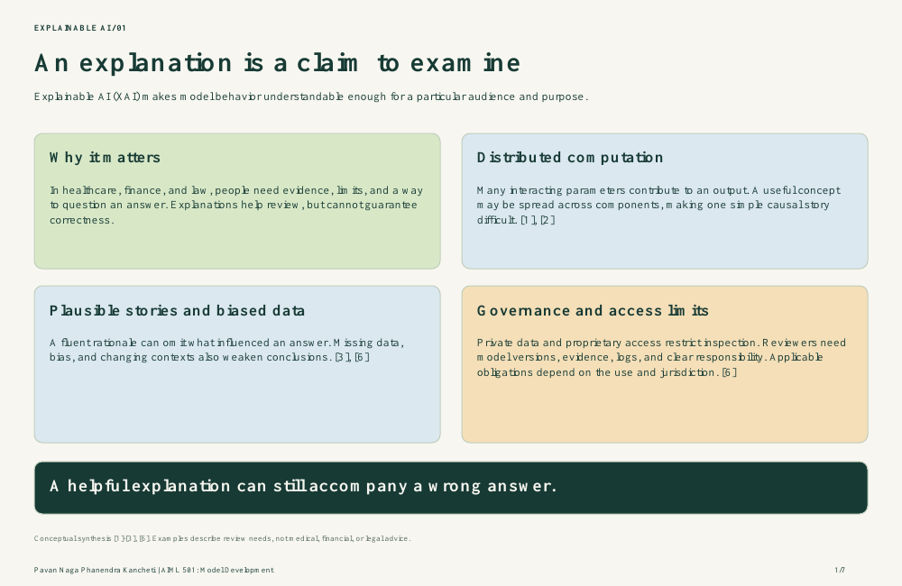
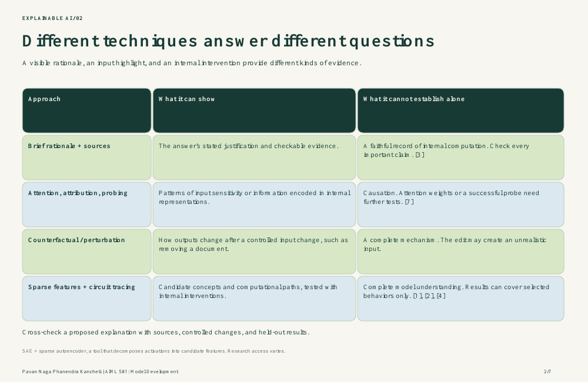
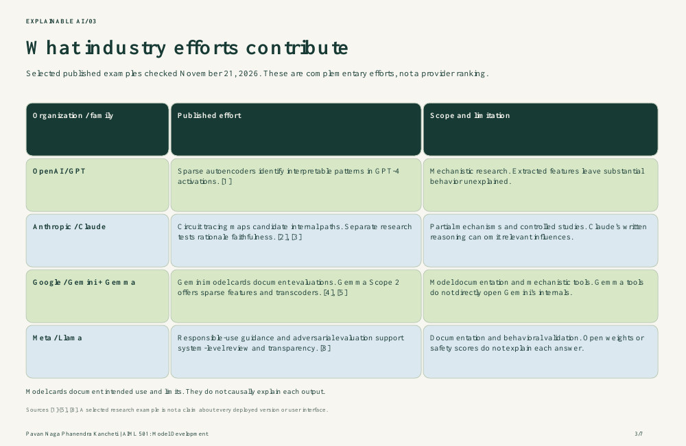
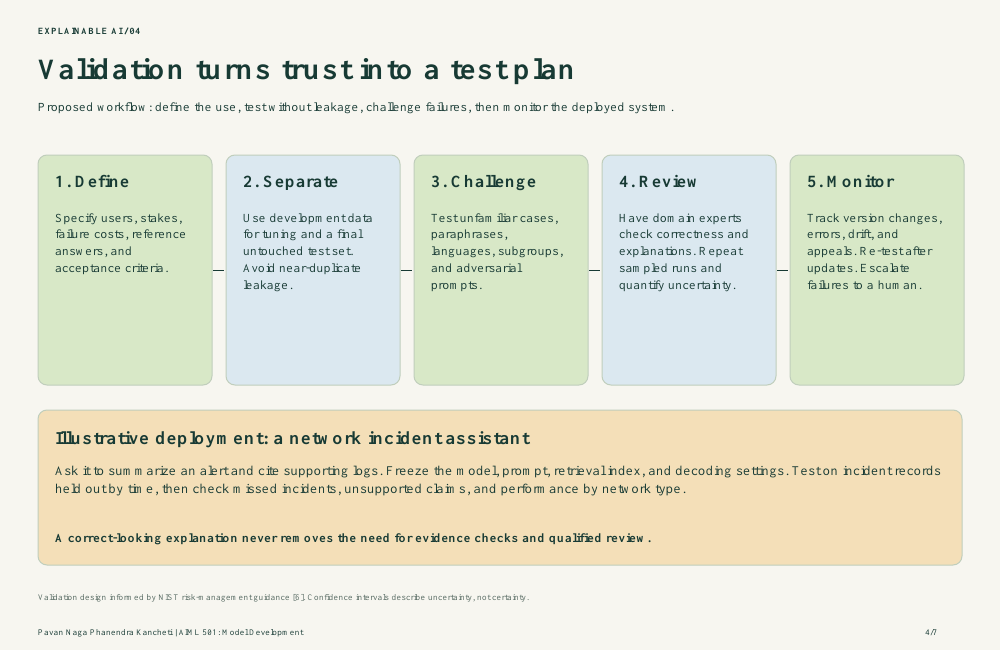
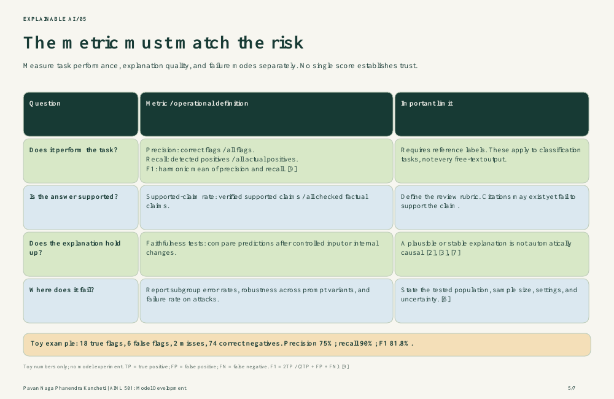
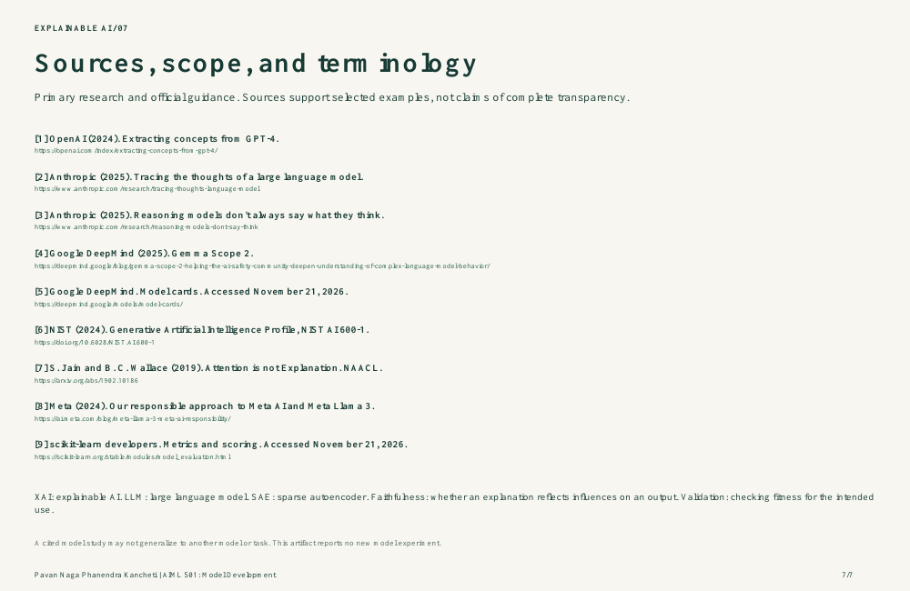

Why it matters
In healthcare, finance, and law, people need evidence, limits, and a way to question an answer. Explanations help review, but cannot guarantee correctness.
What model explanations can reveal, where they fall short, and how validation and performance metrics help reviewers judge reliability.
Pavan Naga Phanendra Kancheti / AIML 501: Model Development
Challenge: distinguish a persuasive explanation from evidence of how a model works and whether it is reliable.
Approach: classify techniques by the evidence they provide, compare primary industry research, and connect a validation plan to task-specific metrics. A fictional example demonstrates calculations.
Skills demonstrated: explainability research, validation design, metric interpretation, source assessment, and communication for nontechnical audiences. These complement the portfolio’s model classification and infrastructure analysis.
Explainable AI (XAI) makes model behavior understandable enough for a particular audience and purpose.
In healthcare, finance, and law, people need evidence, limits, and a way to question an answer. Explanations help review, but cannot guarantee correctness.
Many interacting parameters contribute to an output. A useful concept may be spread across components, making one simple causal story difficult. [1], [2]
A fluent rationale can omit what influenced an answer. Missing data, bias, and changing contexts also weaken conclusions. [3], [6]
Private data and proprietary access restrict inspection. Reviewers need model versions, evidence, logs, and clear responsibility. Applicable obligations depend on the use and jurisdiction. [6]
Key distinction: explainability asks what helps us understand behavior. Validation tests whether the system works reliably for its intended use. Neither replaces the other.
A rationale can be useful without exposing hidden internal reasoning. Request a concise justification, evidence, assumptions, and uncertainty, then verify them.
A visible rationale, an input highlight, and an internal intervention provide different kinds of evidence.
| Approach | What it can show | What it cannot establish alone |
|---|---|---|
| Brief rationale + sources | The answer's stated justification and checkable evidence. | A faithful record of internal computation. Check every important claim. [3] |
| Attention, attribution, probing | Patterns of input sensitivity or information encoded in internal representations. | Causation. Attention weights or a successful probe need further tests. [7] |
| Counterfactual / perturbation | How outputs change after a controlled input change, such as removing a document. | A complete mechanism. The edit may create an unrealistic input. |
| Sparse features + circuit tracing | Candidate concepts and computational paths, tested with internal interventions. | Complete model understanding. Results can cover selected behaviors only. [1], [2], [4] |
Use converging evidence: compare the explanation with source checks, controlled changes, and held-out results. Removing or changing an internal feature can strengthen a causal hypothesis, but does not explain every behavior.
Selected published examples checked November 21, 2026. These are complementary efforts, not a provider ranking.
| Organization / family | Published effort | Scope and limitation |
|---|---|---|
| OpenAI / GPT | Sparse autoencoders identify interpretable patterns in GPT-4 activations. [1] | Mechanistic research. Extracted features leave substantial behavior unexplained. |
| Anthropic / Claude | Circuit tracing maps candidate internal paths. Separate research tests rationale faithfulness. [2], [3] | Partial mechanisms and controlled studies. Claude's written reasoning can omit relevant influences. |
| Google / Gemini + Gemma | Gemini model cards document evaluations. Gemma Scope 2 offers sparse features and transcoders. [4], [5] | Model documentation and mechanistic tools. Gemma tools do not directly open Gemini's internals. |
| Meta / Llama | Responsible-use guidance and adversarial evaluation support system-level review and transparency. [8] | Documentation and behavioral validation. Open weights or safety scores do not explain each answer. |
Model cards explain intended use and limitations. They document a system; they are not causal explanations of individual outputs.
Proposed workflow: define the use, test without leakage, challenge failures, then monitor the deployed system.
Specify users, stakes, failure costs, reference answers, and acceptance criteria.
Use development data for tuning and a final untouched test set. Avoid near-duplicate leakage.
Test unfamiliar cases, paraphrases, languages, subgroups, and adversarial prompts.
Have domain experts check correctness and explanations. Repeat sampled runs and quantify uncertainty.
Track version changes, errors, drift, and appeals. Re-test after updates. Escalate failures to a human.
This is an author-designed validation protocol, not an experiment performed for this portfolio. Domain-specific review is especially important in high-stakes applications.
Proposed network-incident example: ask an assistant to summarize an alert and cite supporting logs. Freeze the model, prompt, retrieval index, and decoding settings. Test on incident records held out by time. Check missed incidents, unsupported claims, and performance by network type.
Measure task performance, explanation quality, and failure modes separately. No single score establishes trust.
| Question | Metric / operational definition | Important limit |
|---|---|---|
| Does it perform the task? | Precision: correct flags / all flags. Recall: detected positives / all actual positives. F1: harmonic mean of precision and recall. [9] | Requires reference labels. These apply to classification tasks, not every free-text output. |
| Is the answer supported? | Supported-claim rate: verified supported claims / all checked factual claims. | Define the review rubric. Citations may exist yet fail to support the claim. |
| Does the explanation hold up? | Faithfulness tests: compare predictions after controlled input or internal changes. | A plausible or stable explanation is not automatically causal. [2], [3], [7] |
| Where does it fail? | Report subgroup error rates, robustness across prompt variants, and failure rate on attacks. | State the tested population, sample size, settings, and uncertainty. [6] |
The 100-case example is invented to explain calculations. It is not a measured result for GPT, Claude, Gemini, Llama, or a trained portfolio model. Accuracy would be 92%, but that alone conceals the error trade-off.
Fictional 100-case example: 18 true flags, 6 false flags, 2 misses, and 74 correct negatives. Precision = 18/24 = 75%. Recall = 18/20 = 90%. F1 = 36/44 = 81.8%. Accuracy = 92%.
Classification rule: sort by what a method supplies, then choose a test suited to that evidence.
I use four categories: source evidence, behavioral evidence, internal-mechanism evidence, and documentation. They separate what supports an answer, how a system behaves, what may cause an output, and what a developer discloses. A method can contribute to more than one category. I sort by the claim being assessed, not the provider or the attractiveness of its explanation.
| Evidence category | Technique / example | Validation link and measure |
|---|---|---|
| Source evidence | Rationale with citations | Verify claims against sources; supported-claim rate. |
| Behavioral evidence | Held-out tests and prompt perturbations | Compare reference outcomes; precision, recall, subgroup errors. |
| Internal-mechanism evidence | Sparse features and circuit tracing | Intervene on candidate mechanisms; test predicted output changes. |
| Documentation | Model cards and use guidance | Check scope, versions, and disclosed methods; audit completeness. |
Sorting process: identify the claim, identify the evidence source, record the method’s limits, and select a matching validation check. Overlap is allowed: an input perturbation can test both robustness and an explanation’s sensitivity.
Primary research and official guidance. Sources support selected examples, not claims of complete transparency.
Glossary: XAI = explainable artificial intelligence. LLM = large language model. SAE = sparse autoencoder. Probing tests whether a representation contains information. Faithfulness asks whether an explanation reflects influences on the output. Validation checks fitness for an intended use.
Research checked November 21, 2026. Techniques and access vary across versions. NIST guidance provides a risk-management framework, not a legal compliance guarantee. The linked course-specific portfolio requirements could not be verified.






This graphic explains why understanding an AI answer requires more than a fluent justification. Large language models distribute information across many interacting components, and a written rationale may omit influences on the output. I classified the techniques by their evidence: source support, observed behavior, internal mechanisms, or documentation. For each, I identified the claim, recorded its limits, and selected a matching validation check. This separates source-based explanations, behavioral tests, and mechanistic research, then compares selected efforts by OpenAI, Anthropic, Google, and Meta. It distinguishes Google's Gemini model documentation from Gemma interpretability tools and highlights the limitations of attention highlights and post-hoc narratives [1]-[8]. These distinctions matter when reviewers need to question an answer, identify bias, or investigate a failure.
The design uses numbered panels, a technique comparison, and a validation workflow to connect understanding with measurable evidence. Task-specific metrics such as precision and recall quantify different error costs, while supported-claim review and faithfulness tests examine other aspects of reliability. A clearly labeled fictional example demonstrates calculations without implying that a model was tested [9]. The proposed network-incident workflow connects this artifact to my interest in AI and network engineering. Together, explainability, representative validation, and ongoing monitoring support informed human oversight. They complement one another, but no single explanation or benchmark guarantees safe or correct performance. The seven-panel graphic includes the references and glossary, keeping this explanatory note to two paragraphs.
Draft for personal confirmation before submission.
The main learning challenge in this artifact is separating an explanation that sounds convincing from evidence that supports an answer. The detective analogy helps me express that distinction: a statement is a lead to investigate, and different clues answer different questions. I now see why a model card, an attention highlight, and an internal intervention should not receive the same interpretation.
The strategy used here is to classify each technique by the evidence it provides, then pair it with an appropriate check. Source-based explanations need claim verification. Behavioral claims need held-out and stress testing. Mechanistic hypotheses need controlled interventions and explicit limits. This approach also makes uncertainty visible instead of treating every explanation as a complete account of a model’s internal process.
Working through precision and recall clarifies another lesson for me: the preferred metric depends on the cost of an error. A system that catches more incidents may also produce more false alarms. A single accuracy score can hide that trade-off. The numerical example is fictional, so it illustrates this lesson without claiming practical model performance.
This connects to my interests in AI and network engineering. A network incident assistant should support its summary with relevant logs, remain useful on unfamiliar incidents, and make uncertainty clear enough for an engineer to review. My next step would be a small evaluation using de-identified incident records, a fixed prompt, and an untouched test set. I would compare missed incidents, false alarms, and unsupported claims, then inspect disagreements with human reviewers. That would turn this conceptual framework into a measurable investigation.